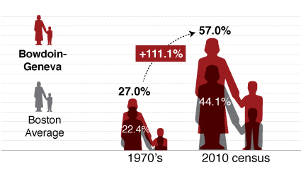
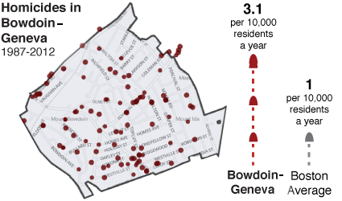
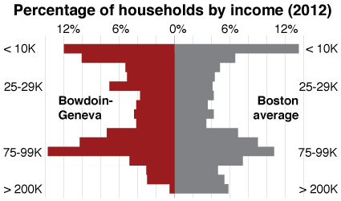
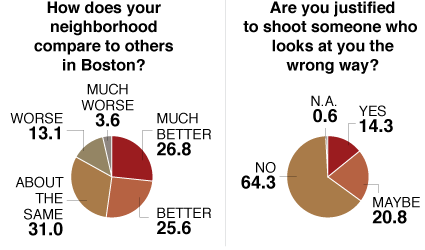
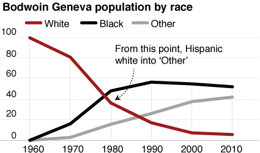

Scroll Down
Single mothers
Half of the households are headed by single women, and many in the community are young children. Roughly 24 percent of the population is under age 14.
Compared to the rest of the city, the percentage of single-mother households is 10 points higher in Bowdoin-Geneva than all of Boston.

Violence
In the last 25 years, Bowdoin-Geneva has had four times the number of shootings per capita as Boston as a whole.
That has given the neighborhood a murder rate that is triple the city’s. Gangs and violence have been embedded here for at least as far back as the 1950s, when white teenagers claimed street corners.

Wealth
Many families in Bowdoin-Geneva are middle income and earn more than $75,000 annually. Roughly 58 percent of the employed work force hold sales, service, and office jobs.
However, more than 18 percent of the labor force is unemployed. Most are single mothers and young people ages 16 to 24 years old.

Survey
Youths here have a positive opinion of their neighborhood. Fifty-two percent of people participated in a Globe survey say Bowdoin-Geneva is better or much better than other neighborhoods in the city.
Just 16.8 percent of the 168 respondents say their neighborhood is worse or much worse than other Boston communities.

Race
The racial makeup of the neighborhood has changed significantly over since the 1960s, from mostly white to mostly black.
Among the dominant ethnic groups are Cape Verdeans, Latinos and African-Americans, who represent nearly half of the Bowdoin-Geneva population.
